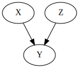
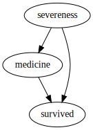
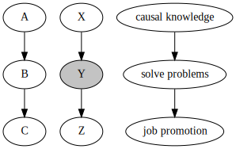
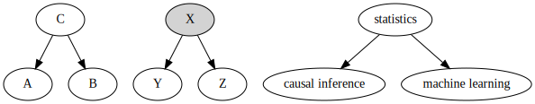
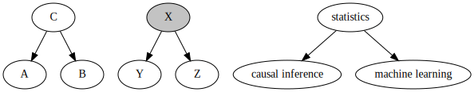
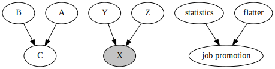
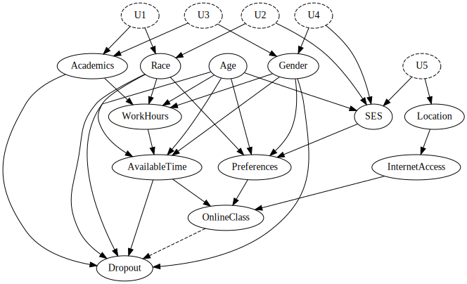
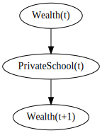

ECON526: Quantitative Economics with Data Science Applications
Introduction to Directed Acyclic Graphs
Overview
Summary
Previously in the course, we talked at a high level about some of the barriers to causal inference
We used the potential outcomes framework to discuss the idea of a treatment effect
Then we discussed the idea of a randomized experiment as a way to identify a treatment effect
- However, we mentioned that there are many situations where we cannot run a randomized experiment
Today, we will discuss the idea of using a graphical model as a way to analyze whether you can truly identify a treatment effect
Directed Graphical Models
Conditional Independence
- Recall that two random variables \(X\) and \(Y\) are conditionally independent given a third random variable \(Z\) if and only if the following holds:
- \(P(X|Z) = P(X|Z\cap Y)\)
- Equivalently, \(P(X\cap Y| Z) = P(X|Z)P(Y|Z)\)
- We will denote this as \(X \perp Y | Z\)
- In the context of potential outcomes, we require that \((Y_0, Y_1) \perp T | X\)
- This means that the potential outcomes are independent of the treatment assignment, given the covariates
Directed Graphical Models
Complete independence is rare in complex systems. However, we can often find conditional independence relationships, that help inform our choice of statistical model.
We can visualize conditional independence relationships using a Bayesian or directed graphical model
A Bayesian graphical model is a directed graph where:
- The nodes or vertices represent random variables
- The links or edges represent conditional independence relationships
Directed Graphical Models
Fundamentally, a graphical model is a way to represent how a joint probability distribution factorizes into a product of conditional distributions.
For our purposes, we will usually interpret the edges as causal relationships.
Furthermore, the graphs we draw will be acyclic, meaning that there are no loops in the graph.
- In other words, there is no way to start at a node and follow the arrows to get back to the same node
- This is because we are interested in causal relationships, and a cycle would imply that there is a feedback loop where a variable causes itself
Since these graphs are both directed and acyclic, we call them directed acyclic graphs or DAGs
Directed Graphical Models
- A directed graphical model might look something like this:

- Here, we have three random variables: \(X\), \(Y\), and \(Z\)
- \(X\) and \(Z\) are independent
- \(Y\) depends on both \(X\) and \(Z\)
Directed Graphical Models

- We use arrows to indicate the direction of the conditional independence relationship
- For example, \(medicine \rightarrow survived\) means that \(survived\) depends on \(medicine\), but not the other way around
Directed Graphical Models
Directed graphical models are useful because they allow us to visualize conditional independence relationships, which can often be difficult to keep track of
However, they are also useful because they allow us to determine whether or not we can identify a treatment effect.
There are three very common sub-structures that appear in graphical models, that inform how dependence will flow through the model.
Directed Graphical Models

- In this stylized example of a directed path, we are postulating that knowing causal inference is the only way to solve business problems
- This is obviously not true, but it is a useful example for our purposes
Directed Graphical Models
- This model highlights the following statistical process:
- Knowing causal inference gives you the ability to solve business problems
- Solving business problems makes you more likely to get a job promotion
- Notice that this does not imply that causal knowledge is independent of job promotion
- That is, if we know the value of job promotion, we can still learn something about causal knowledge
- If we observe that a promotion happens in this model, this tells us that it is more likely that the person knows causal inference
Directed Graphical Models
Now let’s condition on the intermediate variable \(Y\)
- This is the variable that represents the ability to solve business problems
- In the graph, we have colored this variable grey to indicate that we are conditioning on it
Conditioning on \(Y\) means that we are assuming that we know whether or not the person solved a business problem
In this case, conditioning on \(Y\) breaks the dependence relationship between \(X\) and \(Z\)
- That is, \(X\) and \(Z\) are now independent, given \(Y\)
- Mathematically, \(A \perp C\), but \(X \not\perp Z | Y\)
Directed Graphical Models
Now let’s look at another common structure:

- In this model, we are postulating that statistics is a prerequisite for both causal inference and machine learning.
Directed Graphical Models

- This model highlights the following statistical process:
- Knowing statistics gives you the ability to do causal inference
- Knowing statistics gives you the ability to do machine learning
- When we don’t condition for the root node, \(C\), there is still a dependence relationship between \(A\) and \(B\)
- That is, if we know that an individual has causal knowledge, this tells us that they are more likely to know statistics, and thus to also know machine learning
Directed Graphical Models
- By conditioning on \(X\), we break the dependence relationship between \(Y\) and \(Z\)
- That is, \(A\not\perp B\), but \(Y \perp Z | X\)
- We would call this a fork structure
Directed Graphical Models
Finally, let’s look at a third common structure, called a collider:

- In this model, we are postulating that statistics and flattery are both determinants of getting a job promotion.
Building a Causal Graph
Building a Causal Graph
Now that we have seen some examples of causal graphs, we should think about how to draw a causal graph for a problem in practice.
Drawing a causal graph is a way of encoding the assumptions that you are making about the data generating process.
The first step is to identify the variables that are relevant to the problem at hand.
- Do your research!
Building a Causal Graph
In reality, there are many variables that are relevant to a problem.
Real data-generating processes are therefore extremely large and complex.
Think about what the data generating process might look like for something similar the online class example we have been using
- (if we didn’t have a randomized experiment)
Building a Causal Graph
- Let’s say we were interested in the effect of online classes on college dropout rates. The treatment effect we want to identify is:
Building a Causal Graph
- In addition to
OnlineClass, there are many variables that might cause a student to drop out of college.
Building a Causal Graph
- Some of these variables might also determine whether or not a student takes an online class.
Building a Causal Graph
- Then there are some other variables that affect just
OnlineClassand notDropout
Building a Causal Graph
- There are relationships between some of these variables as well
Building a Causal Graph
- Even if there is not a direct causal relationship between two variables, there might be an indirect relationship through a third variable
Building a Causal Graph
- And then there are some variables that we know are correlated, but due to some other combination of unknown factors

Building a Causal Graph
- As we can see, this graph got very complex, very quickly.
- It is clearly not capturing all of the relevant variables
- What else might be missing?
Building a Causal Graph

- As we can see, this graph got very complex, very quickly.
- It is clearly not capturing all of the relevant variables
- What else might be missing?
- CommunityCollege vs. University
- Income
Simplifying the Graph
- In practice, we will not be able to draw a graph that captures everything. How can we choose which relationships to include, and which to ignore?
Unimportance - If the arrows coming in and out of a variable all represent small or negligible effects, we can ignore them.
Redundancy - If there are variables on the diagram that occupy the same space (i.e. they both have incoming and outgoing links from the same variables) then we can probably combine them into a single variable.
Mediators - If a variable is only included as a way to connect two other variables, we can probably remove it.
Irrelevance - If a variable is important to the DGP, but isn’t part of a dependence path between the treatment and the outcome, we can ignore it.
Building a Causal Graph

- Unimportance was already necessarily applied in the creation of the graph.
- We can also apply redundancy by combining
RaceandGenderinto a single variable,Demographics
Building a Causal Graph

- There are also quite a few Mediators
- The most prevelant is
Preferences, (we can just haveDemographics, etc. directly affectOnlineClass). - We can throw out
InternetAccesswithout losing anything.
- The most prevelant is
- There is one more. Can you find it?
Building a Causal Graph

Notice that all of the variables that cause
AvailableTimeare also causes ofWorkHours.We can therefore throw out
AvailableTime, and just haveWorkHoursdirectly affectOnlineClass, rather than throughAvailableTime.AvailableTimeis also a mediator.
Building a Causal Graph
We are left with a much simpler (although still messy) model, that still captures most of the relevant relationships.
Even though the simplified model is nicer to work with, these rules are just heuristics and shouldn’t be applied blindly.
Aside: Cycles
Cycles
There is one thing that a causal diagram cannot have: a cycle.
A cycle is a directed path that starts and ends at the same node.
- This would mean that a variable causes itself, which is impossible.
The simplest cycles look like this:
Cycles
- Why can’t we have cycles? Surely there are feedback loops in the real world.
- If we have a cycle, then our causal problem is ill-specified.
- We can’t identify the effect of
PrivateSchoolonWealth, becauseWealthalso causesPrivateSchool… or does it?
- We can’t identify the effect of
Cycles

We can solve this problem by introducing the time dimension.
By creating a new variable to represent the lagged value, we can break the cycle.
- This also loosely corresponds with the physicists view of causality, where the arrow of time is fundamental.
- Similar to the time-series concept of Granger Causality.
Credits
This lecture draws heavily from Causal Inference for the Brave and True: Chapter 04 - Graphical Causal Models by Matheus Facure.
There is also material from A Short Course on Graphical Models Chapter 2: Structured Representations by Mark Paskin.
As well as The Effect: Chapter 7 - Drawing Graphical Diagrams by Nick Huntington-Klein.